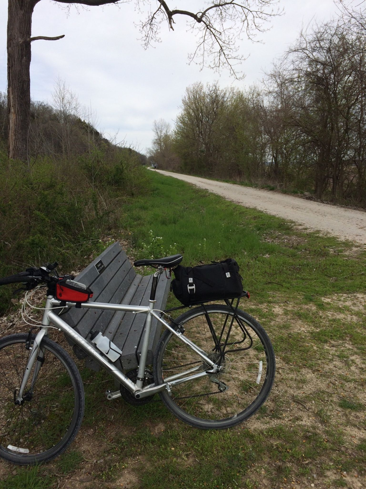
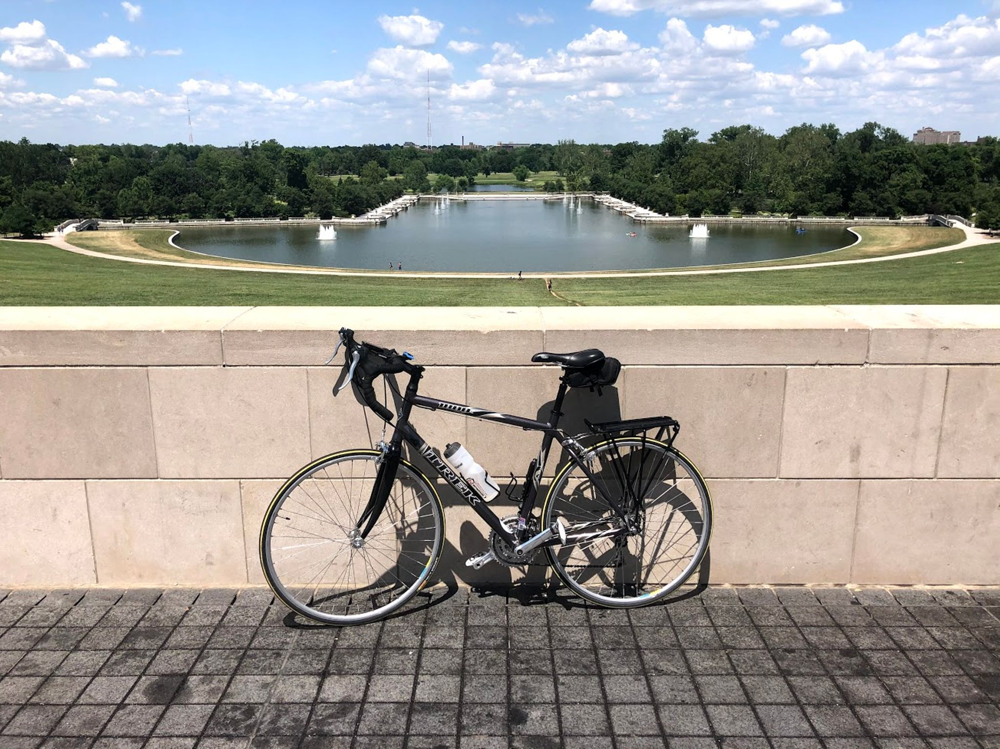

My First Bike
I still remember getting my first proper bike without training wheels. When I was about 8 or 9, My grandparents bought mountain bikes for me and my brother. We would ride all around our neighborhood and to the nearby QuikTrip for snacks and sodas. When I out grew the bike a few years later I didn't get a new one for many years later.
My Second Bike
When I was in my early twenties I bought my second bike, a low-end Trek hybrid biycle, at the encouragement of a cyclist friend. We would go on short rides and sometimes ride Katy Trail or Grant's Trail. But over the years I only rode on occassion.
My Third Bike
When I was laid-off during the Covid-19 shutdown, I started biking again. It helped to me feel better and gave me a good excuse to exercise and to get outside. In May of this year, I bought a used road bike from Bike Works in Soulard. This bike was a better fit for me and the drop handlebars were much more comfortable. It was also much faster, which meant I could ride for longer without getting tired.
My "Fourth" Bike
I am now in the process of converting my hybrid bike into a gravel bike. A gravel bike is somewhere in between a road, mountain, or hybrid bike. It has the the handlebars and shifters of a road bike, but the wider tires and sometimes the suspension you'd find on a mountain bike. This bike will be better for riding on somewhat rougher terrain, but still have some of the speed advantages of a road bike along with the more comfortable drop handlebars.
Summary
...